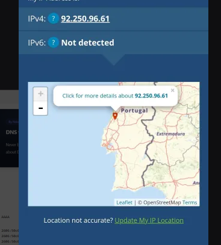

Como demonstrado aqui temos o meu ip em dados moveis primeiro e dps através da minha net no pc

Há claramente uma diferença em localização.
Em seguida temos tudo a haver com os Ips, de onde vem o percurso, tracert, e o DNS


Agora para o inspect do site e indo a barra Network temos isto

Ora conseguimos ver que temos o index como o mais pesado mas foi o mais rápido assumo que seja porque não teve que cobrir muitos pixeis, quando a imagem e o background demoram mais um pouco apesar de serem mais leves